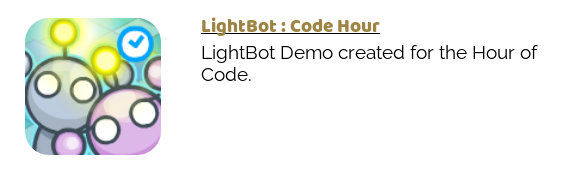

Information for the mentors
| Start Time | End Time | Event |
|---|---|---|
| 13:00 | 14:00 | Mentors arrive and prepare rooms |
| 14:00 | 14:30 | Registration |
| 14:30 | 15:00 | Welcome and introduction to Zurich challenge |
| 15:00 | 16:00 | CoderDojo |
| 16:00 | 16:20 | Break |
| 16:20 | 17:20 | CoderDojo |
| 17:20 | 17:30 | Closing |
Certain things need to be prepared before first ninjas show up.
The Welcome desk will have to be open until 15:00 or so.
Volunteers from Zurich will be taking care or registrations.
Still time to distribute materials and prepare event. And start welcoming our ninjas.
As usual there will be a 20 minute break in the middle, to be planned individually in each of the groups.
It is good for mentors to hang out and stay, as parents and ninjas may have some questions.
All our materials have to be packed back to boxes/backpacks etc.
We need to pack our materials to use them during normal CoderDojos.
lightbot - program a small robot and help it light the tiles. Scroll down to
Hour of Code and then select flash version.

First stages are quite simple, but higher stages introduce procedures, loops, recursion. Parents will help their
kids with that.
Parents are robots programmed by ninjas to retrieve a missing piece of space ship. We will need quite a few
pieces of spaceship hardware (cables, raspberries?)
Have a look at DrTechniko excellent blog posts on what will ninjas do during the session.
The robot instructions will be available in German and in English.
Start with lightbot. Make a Parent Robot programming session in the middle and finish with lightbot.
Parent robot programming would require some space to walk around for kids and parents - see the link above. A
"robot part" that has to be retrieved, few obstacles (chair, pillar etc), paper and some markers to write.
Parent robot programming session helps a lot with lightbot session afterwards.
Ideally this should be a separate room for ninjas to feel comfortable.
This is our main activity during a CoderDojo. We have several projects and helper materials that can be used by ninjas to start with Scratch. Currently mostly in German, but we also translate some to English. See: http://coderdojozh.github.io/ Usually at the end we also do a demo session for everyone who wants to show what they did. Maybe we could invite the youngest group here at the end to see what can be done in scratch. We will have to discuss how to handle the "demo" part during the bigger event.
For older ninjas, we have some materials to create a game in the Lua.
The target group would be ninjas already somehow familiar with computer keyboard and typing.
This group could also make a demo.
We will need to have a desk at the entrance to welcome parents, mentors and ninjas.
It will have to be open from before 9:00 to around 10:00. Later we can just leave our flyers and posters there.
The best ways to reach us are @CoderDojoZh on Twitter and our meetup page (contact organizers).
Or simply drop by on a Sunday afternoon!